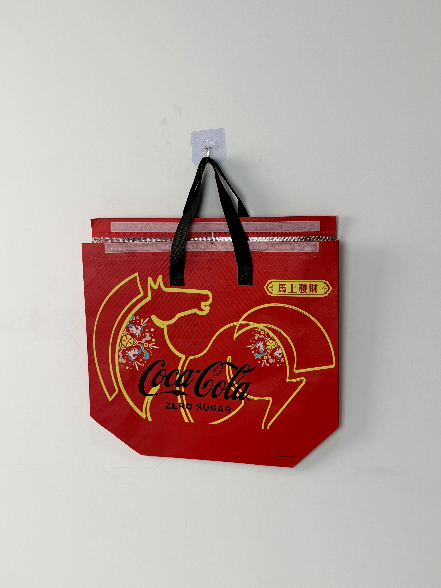

A festive red insulated tote designed for Coca-Cola's Chinese New Year campaign, featuring a gold horse motif and auspicious cultural messaging that connects global brand equity with local festival traditions.

Coca-Cola has operated in China for over four decades, building one of the most recognized global brands in a market that increasingly values cultural localization. The company's Chinese New Year campaigns are among the most anticipated annual marketing events, consistently ranking among the most shared and discussed brand content during the festival period. For Coca-Cola, CNY packaging is not merely promotional — it is a cultural statement that demonstrates the brand's understanding of and respect for Chinese traditions.
Chinese New Year is our biggest moment in China. The packaging needs to feel like it belongs on the family dinner table, not just in a delivery rider's bag.
This thermal bag was developed for Coca-Cola Zero Sugar's CNY campaign, targeting health-conscious younger consumers who wanted to participate in festive traditions without sugar compromise. The design challenge was to create packaging that felt celebratory and premium while clearly communicating the zero-sugar product variant.
The creative direction fuses Coca-Cola's global visual equity with specific Chinese New Year iconography. The iconic red field — already shared between Coca-Cola corporate identity and Chinese festive color symbolism — creates natural cultural alignment. The gold horse silhouette incorporates traditional paper-cut art styling, while the "马上发财" (Instant Wealth) badge plays on the horse homophone in Chinese festive wordplay.
Coca-Cola's signature red aligns perfectly with Chinese New Year color symbolism for double cultural resonance.
Paper-cut art styling honors traditional craft while creating contemporary visual impact through metallic gold execution.
"马上发财" badge leverages horse homophone for instant wealth — a classic CNY linguistic tradition.
Coil zipper closure ensures secure transport during busy festival delivery periods and family gift exchanges.
Chinese New Year campaigns generate enormous order volumes concentrated in a two-week window. The bag needed to withstand peak logistics pressure while maintaining the premium presentation expected of a Coca-Cola festive product. Cold retention was particularly important given that CNY celebrations in southern China often coincide with mild winter temperatures where chilled beverages remain preferred.
| Parameter | Specification | Test Standard |
|---|---|---|
| Cold Retention | < 12°C for 45 min (20°C ambient) | Internal Protocol |
| Load Capacity | 6 kg | ASTM D5265 |
| Foil Adhesion | > 300 cycles | ASTM D5264 |
| Zipper Durability | > 1,000 cycles | ASTM D2061 |
Coca-Cola's global brand standards demand extraordinary production precision. The six-stage workflow incorporated color-matching protocols, multi-process printing, and strict quality gates to ensure every bag met the company's exacting specifications.
Non-woven PP extruded with Coca-Cola red masterbatch. Color verified against global brand Pantone standard under D65 lighting.
CMYK process print for horse silhouette details and Coca-Cola Zero Sugar branding. 175 LPI resolution for photographic quality.
Hot-foil transfer at 150°C for auspicious badge and decorative elements. Precision registration aligned to printed outline.
20-micron glossy BOPP film for festive surface sheen. Enhances gold foil contrast and provides moisture protection.
3mm EPE foam laminated to aluminum-PE barrier. Heat-compression at 3.5kg/cm for uniform cold-chain performance.
Nylon coil zipper sewn into reinforced top channel. 100% foil adhesion test. Thermal probe sampling. AQL 1.0 inspection.
The thermal bag was deployed across Coca-Cola's Chinese New Year e-commerce and supermarket channels, distributed with multi-bottle gift sets and family meal bundles. The campaign targeted both direct consumers and corporate bulk purchasers seeking festive beverage options for office celebrations.
Key Insight: Corporate bulk purchasers specifically requested the thermal bag version over standard packaging, citing its reusability as a practical benefit for employees. The bag's zipper closure and insulated construction made it suitable for post-holiday use as a lunch carrier — extending brand exposure far beyond the CNY period.
The design's cultural fluency was validated by social-media response. Unlike previous years where global brands faced criticism for superficial CNY theming, Coca-Cola's horse wordplay and paper-cut styling were recognized as genuinely informed cultural references. The campaign generated overwhelmingly positive sentiment in brand mention analysis.
Three design decisions differentiate this CNY packaging from standard seasonal promotions. Each demonstrates deep cultural understanding combined with global brand discipline.
Coca-Cola's corporate red and Chinese New Year red are not merely similar — they are culturally convergent. This alignment eliminates the tension global brands often face when adapting to local festivals. The bag doesn't look like a foreign brand wearing Chinese costume; it looks like a natural participant in the celebration.
The "马上发财" badge demonstrates sophisticated understanding of Chinese linguistic culture. This type of homophonic wordplay is central to CNY communication, and its correct deployment signals that Coca-Cola employs native cultural strategists rather than translating Western concepts.
Chinese New Year gift-giving places high value on presentation completeness. An open-top bag would feel unfinished as a gift; the zipper closure transforms the thermal carrier into a proper gift box alternative, suitable for direct presentation to family members without repackaging.
We manufacture culturally localized packaging for global brands entering Chinese and Asian markets. From festival symbolism to cold-chain engineering, we balance global brand standards with local cultural fluency.